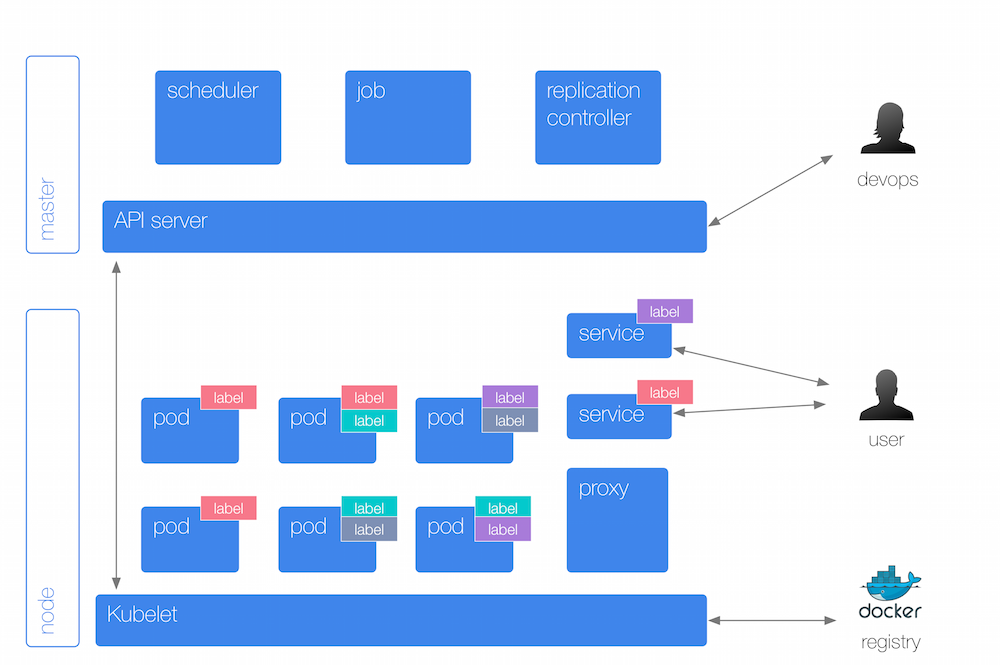

Physical Layout

Get cluster info:
kubectl cluster-infokubectl config viewkubectl get nodesnode123:
kubectl describe node123Kubernetes Abstractions Overview

List pods:
kubectl get podskubectl get rckubectl get svckubectl get epKubernetes Abstractions Details

List namespaces:
kubectl get namespaceskubectl describe limits